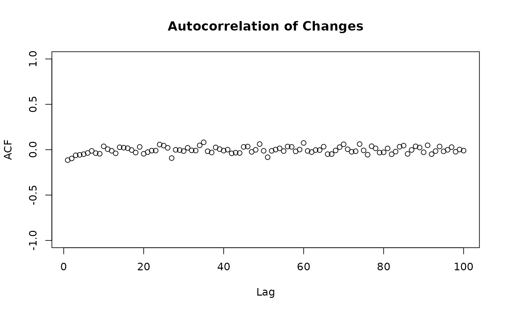

Calculates the autocorrelation of a given sequence, or of the size of the steps (returns).
calc_autocorr(chain, change = TRUE, alpha = 0.05, lag.max = 100, plot = FALSE)Vector of n length, where n is the number of trials or sampler iterations
Boolean. If true, plot the autocorrelation of the change series. If false, plot the autocorrelation of the given chain.
Measure of Type I error - defaults to .05
Length of the x axis. How far to examine the lags.
Boolean. Whether to additionally plot the result.
A vector with the standard deviations at each lag
Markets display no significant autocorrelations in the returns of a given asset.
set.seed(1)
chain1 <- sampler_mh(1, "norm", c(0,1), diag(1))
calc_autocorr(chain1[[1]], plot=TRUE)

#> [1] -0.1150446003 -0.0966446932 -0.0618126008 -0.0567705310 -0.0496392475
#> [6] -0.0359927277 -0.0133378054 -0.0379785703 -0.0448936152 0.0371478287
#> [11] 0.0060618370 -0.0119816835 -0.0399858270 0.0265634353 0.0223536349
#> [16] 0.0164402186 -0.0038854728 -0.0316195050 0.0304996333 -0.0451553008
#> [21] -0.0267966463 -0.0103099855 -0.0098989516 0.0568104291 0.0450566131
#> [26] 0.0206143073 -0.0925285314 -0.0016337657 -0.0042758680 -0.0153539363
#> [31] 0.0207270248 -0.0076747097 -0.0096810752 0.0476360499 0.0817075737
#> [36] -0.0175483036 -0.0309487389 0.0250818232 0.0061821888 -0.0103703797
#> [41] 0.0005154128 -0.0403768553 -0.0331898063 -0.0363669642 0.0309489006
#> [46] 0.0345815800 -0.0242113463 -0.0014859234 0.0620482993 -0.0123403001
#> [51] -0.0833116706 -0.0126644345 0.0013284209 0.0147987836 -0.0152025180
#> [56] 0.0347882193 0.0310981597 -0.0181354446 0.0013425143 0.0741180669
#> [61] -0.0134884890 -0.0260924309 -0.0037476865 -0.0043174958 0.0332130205
#> [66] -0.0490933719 -0.0482056232 -0.0088466735 0.0285032948 0.0595038396
#> [71] 0.0047813406 -0.0229626680 -0.0170818503 0.0618493884 -0.0077203543
#> [76] -0.0551664432 0.0383995857 0.0150675586 -0.0320229492 -0.0287721285
#> [81] 0.0143372471 -0.0500119941 -0.0212938618 0.0325113760 0.0448774584
#> [86] -0.0464319394 -0.0030723626 0.0368707421 0.0245102841 -0.0282283781
#> [91] 0.0484175226 -0.0490941304 -0.0154601929 0.0354164767 -0.0179848102
#> [96] -0.0015311493 0.0281416310 -0.0226557376 0.0018340181 -0.0102159529